MOIRAI
Flight-Test Scheduling & Risk-Analysis Tool — User Manual
Version: Demo Program 2026. This manual is written for a first-time operator.
Every page, button and input field is described with the exact label shown on screen. On-screen labels are written in this style.
All screenshots come from the sample “MOIRAI Demo Program 2026” session that ships with the application. Open it via File › Open Session… to follow along.
1. What Is MOIRAI?
MOIRAI is a decision-support tool for flight-test programmes. It does two things:
- Builds a deterministic, day-by-day schedule, resolved within each day to discrete blocks (morning / midday / afternoon).
- Quantifies the programme's risk under weather, test-efficiency and equipment-reliability uncertainty.
You enter the resources (test pilots, flight-test engineers, aircraft, simulators, remote bases) and the test campaigns. MOIRAI then:
- Places each sortie (a real flight) and its rehearsal (a simulator session shortly beforehand) on the calendar.
- Reports each campaign's completion date and whether it meets its target.
- Diagnoses why a campaign slips.
- Computes the probability of meeting each deadline by Monte Carlo simulation.
- Recommends the smallest set of changes that recovers the schedule.
Scope: fixed-wing, day operations. Flight- and duty-hour limits follow the organisation's Flight Test Operations Manual (FTOM). Every limit and rate is editable scenario data; nothing is fixed in the engine.
Intended users: the test programme manager, the planning officer and the operations staff. MOIRAI is both a production scheduler and a what-if tool ("does a second aircraft pull the date in?").
Questions MOIRAI answers
- When does the programme complete? Is there margin (slack) or an overrun against the delivery date?
- Why is a campaign slipping — aircraft, crew, weather, range, rehearsal capacity, a prerequisite, or data-review pacing?
- Under weather uncertainty, what is the probability of meeting each target? Which assumption drives it most?
- What is the fewest changes (added, reassigned or relaxed resources) that raises confidence to the required level?
- As the programme executes, how does recording the actual sorties flown re-forecast the remaining work?
2. Core Concepts
| Term | Definition |
|---|
| Sortie | One real flight on a given day and block: one aircraft, one or more pilots, a number of engineers. Flies test points. |
| Rehearsal | A simulator session the same crew completes a few working days before the sortie. Counts as duty, not flight time. |
| Block | The intra-day scheduling slot. A day has a configurable number of blocks (default three: morning, midday, afternoon). |
| Test point | The unit of test work. Required sorties = total test points / test points per sortie, rounded up. |
| Campaign | A self-contained body of test work, with its own test points, dates, compatible aircraft, crew and constraints. |
| Scenario | One complete planning input: resources, settings, calendar, weather model and horizon. A session holds several. |
| Session | The saved file. Contains one or more scenarios and their stored results. |
| Horizon | The fixed calendar window (a start and an end date) the whole plan is built within. The scheduler places nothing outside it; a campaign that cannot finish inside it is reported incomplete, not merely late. |
| Master deadline | The single binding delivery date common to all campaigns (optional). A campaign's own target date is a soft milestone. |
| Deployment | A move to a remote base: ferry out, set up, fly, tear down, ferry home. Derived automatically. |
| Type rating | A pilot's or engineer's authorisation to crew a specific aircraft. No rating selected = rated on all aircraft. |
Capabilities at a glance
- Deterministic, deadline-ordered, day-by-day scheduler with intra-day block placement and rehearsal scheduling.
- Multi-window FTOM flight/duty limits, minimum rest, consecutive-flying-day limits, rolling-window crew load balancing.
- Aircraft maintenance and crew leave windows; flight-hour-driven periodic maintenance; random unscheduled maintenance (simulation).
- Campaign prerequisites, single-aircraft locking, multi-ship sorties, type ratings, multi-crew aircraft.
- Per-base simulator capacity, remote-base deployments, range / airspace availability.
- Bottleneck diagnosis (why a campaign was blocked, day by day) with a chronological phase summary.
- Monte Carlo deadline-confidence analysis: risk decomposition, parameter sensitivity (tornado), lever-based resource recommender.
- Scenario comparison, optimisation search (annealing or genetic), execution tracking (record actuals, then replan).
- Gantt charts with tooltips, a test-point burn-down chart, Excel and PDF export.
3. The Main Window
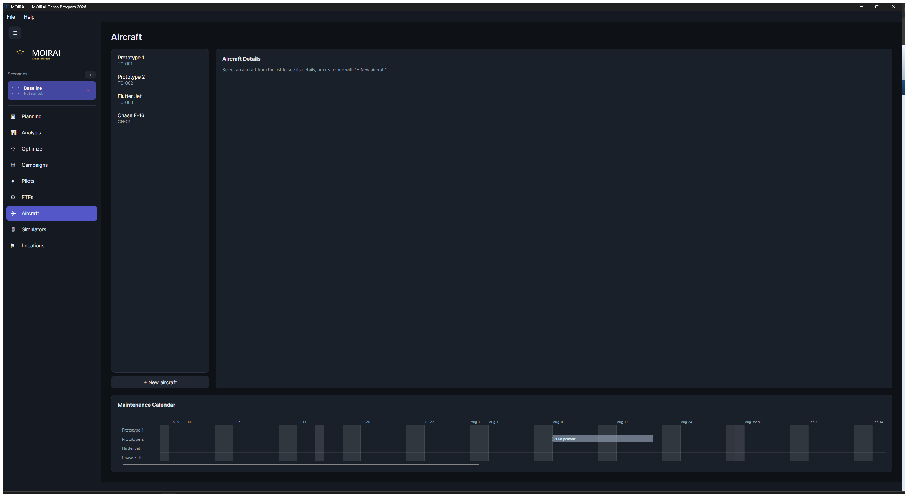
Figure 1 — The main window: the menu bar on top, the scenario list and page menu on the left, the active page on the right.
The title bar shows the open session name. The left sidebar has two regions.
Scenarios list
- Click a scenario to make it active.
- + — create a copy of the active scenario.
- ✕ — delete the scenario.
- Row check-box — select the scenario for the comparison view.
Page menu
The pages that act on the active scenario: Planning, Analysis, Optimize, Campaigns, Pilots, FTEs, Aircraft, Simulators, Locations.
File and Help menus
- New Session, Open Session…, Save Session As… — session operations. A new session is "Untitled session"; the name chosen at Save Session As… becomes the session name.
- Help › Open User Manual — opens this manual (the PDF that ships next to the application).
- Help › About MOIRAI — version, in-app changelog and update check.
Session vs scenario. A session is the file on disk (all scenarios + results). A scenario is one planning input. Keep several in one session (e.g. "Baseline", "+1 aircraft", "Winter") and compare them side by side. A new scenario is a full copy of the active one with results cleared.
4. Data-Entry Pages
Define the resources and campaigns before running a plan. Every data-entry page has the same layout: a list on the left, an editing panel on the right, a related calendar at the bottom.
- Save — commit the field edits for the selected item.
- Delete — remove the selected item.
- Maintenance / leave windows save immediately when added or removed.
4.1 Aircraft
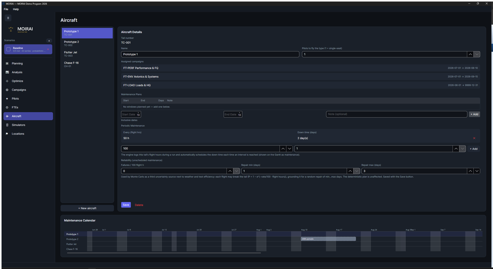
Figure 2 — The Aircraft page with one aircraft selected.
The Aircraft Details panel:
- Tail number — unique aircraft identifier; fixed once created.
- Name — free-text label (e.g. Prototype 1).
- Pilots to fly the type (1 = single-seat) — flight-deck seats the type needs. Single-seat = 1; multi-crew = 2 or more. A sortie carries at least this many pilots.
- Assigned campaigns — read-only list of campaigns that list this tail as compatible.
- Maintenance Plans — fixed-date unavailability windows (Start Date, End Date, optional note; inclusive). The tail cannot fly on those days.
- Every (flight hrs) — periodic-maintenance interval: flight hours that trigger downtime.
- Down time (days) — days grounded each time the interval is reached. The engine counts hours during a run and inserts the window automatically.
- Failures / 100 flight h — mean unscheduled failures per 100 flight hours. Monte Carlo only; 0 = off.
- Repair min (days) — shortest random repair after a failure.
- Repair max (days) — longest random repair after a failure.
4.2 Simulators
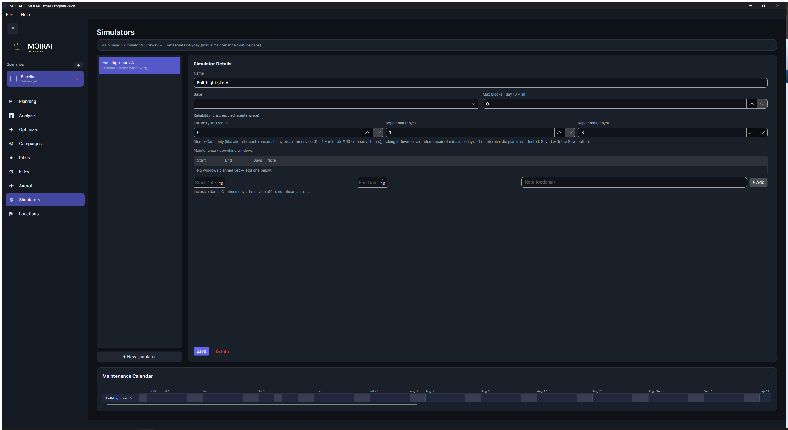
Figure 3 — The Simulators page with one device selected.
Simulators set rehearsal capacity. No simulator at a base = unlimited rehearsals there. The Simulator Details panel:
- Name — device label.
- Base — the main base or a remote location. Rehearsals at a base use only that base's devices.
- Max blocks / day (0 = all) — how many blocks per day the device can run rehearsals.
- Failures / 100 reh. h — mean failures per 100 rehearsal hours. Monte Carlo only; 0 = off.
- Repair min (days) / Repair max (days) — random repair duration after a failure.
- Maintenance / downtime windows — inclusive days on which the device offers no rehearsal slots.
4.3 Pilots and FTEs
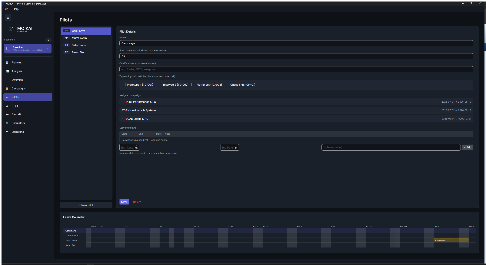
Figure 4 — The Pilots page with one pilot selected.
The Pilot Details and FTE Details panels are identical; only the role differs (FTE = flight-test engineer).
- Name — full name.
- Short name (max 4, shown on the schedule) — four-character label used on the schedule and Gantt.
- Qualifications (comma-separated) — free-text tags kept for reference; the scheduler does not use them.
- Type ratings (aircraft this pilot may crew; none = all) — authorised tails. None selected = rated on all aircraft.
- Assigned campaigns — read-only list of campaigns this person is assigned to.
- Leave windows — inclusive unavailability ranges. No sortie or rehearsal on a leave day.
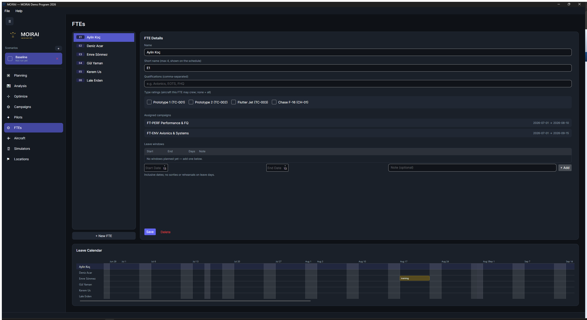
Figure 5 — The FTEs page; the layout matches the Pilots page.
4.4 Locations (Remote Bases)
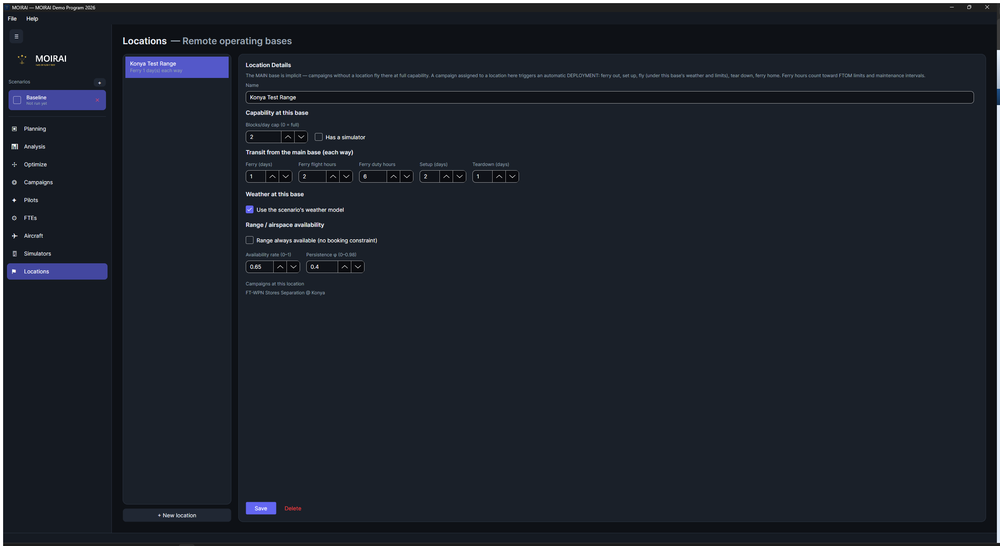
Figure 6 — The Locations page with one remote base selected.
The main base is implicit; this page lists only remote bases. Assigning a campaign to a location triggers an automatic deployment (ferry out, set up, fly, tear down, ferry home). The Location Details panel:
- Name — base label.
- Blocks/day cap (0 = full) — daily block limit at this base; 0 = the scenario's full blocks per day.
- Has a simulator — when off, every rehearsal must complete at the main base before departure.
- Ferry (days) — transit days each way.
- Ferry flight hours — flight hours per ferry leg (count toward FTOM limits and maintenance intervals).
- Ferry duty hours — duty hours per ferry leg.
- Setup (days) — days after arrival before flying can start.
- Teardown (days) — days after the last campaign before the return ferry departs.
- Use the scenario's weather model — when ticked, the base uses the scenario weather. Untick to override.
- Weather model — the override shape: Uniform rate or Seasonal (monthly rates).
- Flyable rate (0–1) — single flyable fraction (uniform mode).
- Monthly flyable rates (0–1) — per-month flyable fractions, January to December (seasonal mode).
- Persistence φ (0–0.98) — weather streakiness (length of good/bad spells) at this base.
- Range always available (no booking constraint) — when off, model range/airspace booking risk.
- Availability rate (0–1) — fraction of days the range is available.
- Persistence φ (0–0.98) (range) — clustering of range-availability losses.
- Campaigns at this location — read-only list of campaigns deployed here.
4.5 Campaigns
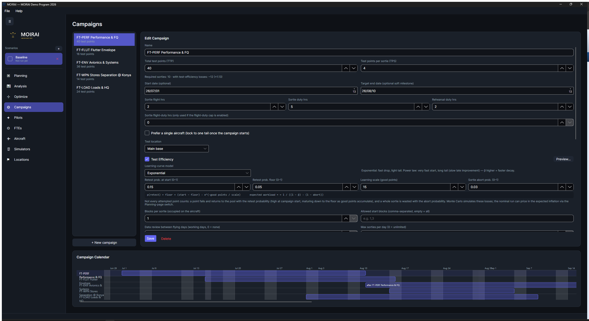
Figure 7 — The Campaigns page with one campaign selected and Test Efficiency enabled.
A campaign is the test work to be scheduled. The Edit Campaign panel:
- Name — campaign label (e.g. FT-PERF Performance & FQ).
- Total test points (TTP) — total work units.
- Test points per sortie (TPS) — points one sortie flies. Required sorties = ceil(TTP / TPS).
- Start date (optional) — earliest opening day.
- Target end date (optional soft milestone) — soft internal target, not the programme deadline.
- Sortie flight hrs — flight hours per sortie (FTOM ledgers).
- Sortie duty hrs — duty hours per sortie (FTOM ledgers).
- Rehearsal duty hrs — duty hours per rehearsal.
- Rehearsal required (each sortie needs a simulator rehearsal first) — when off, sorties fly with no rehearsal scheduled.
- Sortie flight-duty hrs (only used if the flight-duty cap is enabled) — flight-duty time per sortie.
- Prefer a single aircraft (lock to one tail once the campaign starts) — the first sortie locks one tail; the campaign then uses only that tail.
- Test location — the main base or a remote location.
- Test Efficiency — master switch for yield-loss modelling. Enables the fields below.
- Learning-curve model — retest-decay shape: Exponential or Power law.
- Power-law exponent β — decay exponent for the power-law model; higher = faster decay.
- Retest prob. at start (0–1) — chance a point must be re-flown early in the campaign.
- Retest prob. floor (0–1) — mature (minimum) retest chance.
- Learning scale (CL1 Test points) — CL1 Test points over which the retest chance decays from start to floor.
- Sortie abort prob. (0–1) — chance a whole sortie yields zero progress.
- Preview… — opens a chart of expected progress and raw-vs-expected sorties.
- Blocks per sortie (occupied on the aircraft) — consecutive blocks the tail is tied up per sortie.
- Allowed start blocks (comma-separated, empty = all) — blocks in which a sortie may start.
- Data review between flying days (working days, 0 = none) — minimum working days between this campaign's sorties.
- Max sorties per day (0 = unlimited) — campaign-level daily sortie cap.
- Pilots per sortie (0 = scenario default) — test pilots the campaign occupies per sortie.
- FTEs per sortie (0 = scenario default) — test engineers the campaign occupies per sortie.
- Compatible aircraft — tails this campaign may fly.
- Compatible simulators (none = any device at the base) — devices its rehearsals may use.
- Support aircraft / sortie — number of chase/target ships per sortie; 0 = single-ship.
- Support aircraft pool (chase / target — may differ from the compatible list) — tails that may serve as support ships.
- Assigned pilots — pilots eligible for this campaign.
- Assigned FTEs — engineers eligible for this campaign.
- Prerequisites (campaigns that must finish first) — campaigns that gate this one's start.
- Prerequisite maintenance (planned windows that must complete before this campaign starts) — maintenance windows that gate the start.
5. The Planning Page
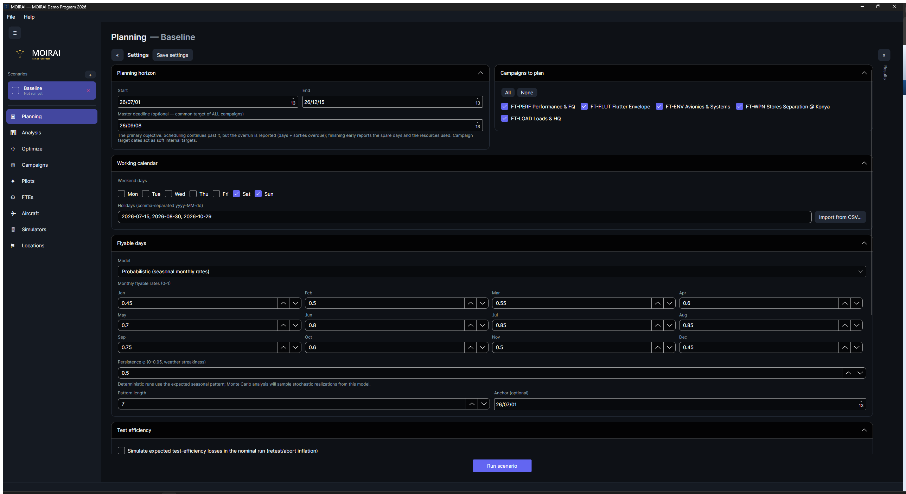
Figure 8 — The Planning page, Settings panel: horizon, calendar, weather model and operational limits.
The Planning page holds the active scenario's settings and, after a run, its results. Save settings commits any change. The Settings panel is organised into cards.
Planning horizon
The planning horizon is the calendar window the entire plan lives in: the scheduler simulates every day from Start to End and may place sorties and rehearsals only inside it — nothing before Start or after End. Set it long enough to hold the whole programme with margin. If a campaign runs out of usable days before End, it is reported as incomplete (a structural shortfall), not merely late. The horizon is independent of each campaign's own start and target dates and of the master deadline — those all sit inside it. Monte Carlo and the optimizer work within the same window, so an Incomplete probability on the Analysis page usually points to a horizon (or capacity) that is too tight.
- Start — first day of the planning window.
- End — last day of the planning window.
- +1 month / +3 months / +6 months / +1 year — set End to that span after Start.
- Master deadline (optional — common target of ALL campaigns) — the binding delivery date. Scheduling continues past it, but any overrun is reported.
Campaigns to plan
- Campaigns to plan — the campaigns included in this run.
- All / None — select or clear all campaigns.
Working calendar
- Weekend days (Mon … Sun) — the non-working weekdays.
- Holidays (comma-separated yyyy-MM-dd) — extra non-working dates.
- Import from CSV… — bulk-load holidays from a file.
Flyable days
- Model — Rate-based (uniform pattern) or Probabilistic (seasonal monthly rates).
- Flyable rate (0–1) — single flyable fraction (rate-based model).
- Monthly flyable rates (0–1) — per-month flyable fractions (probabilistic model).
- Persistence φ (0–0.95, weather streakiness) — length of good/bad weather spells. Monte Carlo requires the probabilistic model.
- Pattern length — length, in days, of the deterministic flyable pattern.
- Anchor (optional) — the day the pattern starts from.
Test efficiency
- Simulate expected test-efficiency losses in the nominal run (retest/abort inflation) — price expected yield losses into the deterministic run.
- Override campaign sortie abort probability — apply one abort value to every campaign.
- Abort probability for ALL campaigns (0–0.95) — the override value.
Operational limits (shared by everyone)
- Blocks per day (intra-day slots) — blocks each day is divided into.
- Load-balance window (days) — rolling window over which crew duty is balanced.
- Pilots per sortie — scenario-default pilots per sortie.
- FTEs per sortie — scenario-default engineers per sortie.
- Max sorties / person / day — per-person daily sortie cap.
- Max rehearsals / person / day — per-person daily rehearsal cap.
- Max rehearsal gap (working days) — how many working days before the sortie a rehearsal may sit.
- Max consecutive flying days — longest run of consecutive flying days per person.
- Min rest (hours) — minimum rest between consecutive duty days.
- Max flight-duty h / day (0 = off) — optional daily flight-duty cap.
- Rehearsals on workdays only — restrict rehearsals to working days.
- Flight-hour caps — maximum flight hours per day, per 7 days, per 28 days, per year.
- Duty-hour caps — maximum duty hours per day, per 7 days, per 14 days, per 28 days.
Run scenario at the foot of the page generates the schedule.
5.1 Pre-run checks
Above Run scenario, the Pre-run checks card lists logic problems detected before the run. Each item is an Error, Warning or Information. Warnings do not block the run, but a campaign with errors is unlikely to be scheduled as intended. Typical findings:
- A campaign with no compatible aircraft, or no crew rated for (or sufficient to crew) any compatible aircraft.
- Fewer assigned pilots or engineers than a sortie needs; or all assigned pilots on leave throughout the window.
- A target end date before the start date; or a window too short to fit the required sorties at one sortie per day.
- A prerequisite cycle, an unknown location, or a campaign restricted to a simulator that is not at its base.
5.2 How Sorties Are Ordered and Prioritised
Run scenario builds the schedule one day at a time, from the horizon Start to its End, and never goes back to change an earlier day (a fast, greedy forward pass). On each day the engine decides which campaign flies, on which aircraft, with which crew, and in which block. Understanding that order explains why one campaign got the jet and another waited.
Which campaign gets first claim each day
Every day, the engine gathers the open campaigns — those whose Start date has arrived, whose prerequisites are complete, and which still need sorties — and tries them in priority order:
- Earliest target end date first: the most urgent deadline gets first pick of the scarce aircraft and crew.
- A campaign with no target date inherits the master deadline; with neither, it is tried last.
- This is the same order the deadline reports use. The Optimize page can search for a better campaign order and write it back, but by default priority is simply deadline order.
Within a single day the engine makes repeated passes through that ordered list, placing at most one sortie per campaign per pass, until a whole pass places nothing more. This spreads the day's blocks across the competing campaigns instead of letting the first one consume the whole day, while the most urgent campaign still gets the first choice on every pass.
How each sortie is filled
For a campaign's next sortie, four things must line up on the day. If any is missing, the campaign is passed over and the day is charged to the reason it was blocked (this feeds the why it slipped explanation):
- Aircraft — among the campaign's compatible, available tails (not in maintenance, with rated crew), the engine picks the least-used one to balance hours across the fleet. If the campaign has Prefer a single aircraft set, it instead waits for its one locked tail.
- Block — the first free block (or run of consecutive blocks, for a campaign that occupies several blocks per sortie) among the campaign's Allowed start blocks.
- Crew — from the campaign's Assigned pilots and Assigned FTEs that are available (not on leave, within their FTOM flight- and duty-hour limits, and free in that block), the engine picks the least-loaded by recent duty (a rolling window, weekly by default), so flying spreads evenly across people rather than piling onto one crew.
- Rehearsal — the same crew must fit a simulator rehearsal in the working days shortly before the sortie (or, for a deployment to a base with no simulator, before departure). If no rehearsal slot fits, the sortie is rolled back and the campaign waits.
Sorties are numbered per campaign in the order they are placed (Sortie 1, 2, 3 …) — the same numbers shown on the Gantt and in the schedule table.
What spaces sorties out
Even when resources are free, two campaign settings can hold the next sortie back: Data review between flying days inserts a minimum number of working days between a campaign's sorties, and Max sorties per day caps how many it may fly in one day. These are deliberate pacing rules, separate from any resource shortage, and are reported under their own heading — not as a bottleneck the recommender would try to fix with more hardware.
6. Reading the Results
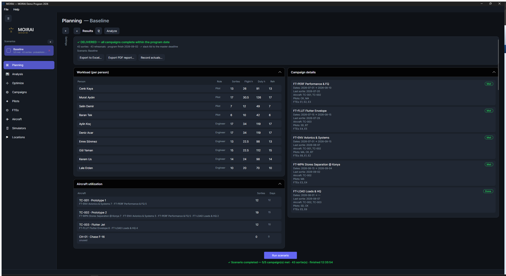
Figure 9 — The Results panel: the programme verdict, per-person workload and campaign outcomes.
After a run, the Results panel opens. The programme verdict is stated at the top:
- DELIVERED — every campaign completed and the programme finished on or before the master deadline. Shows ✓ slack Nd to the master deadline.
- AT RISK — the master deadline was overrun, or a campaign did not complete. Shows ⚠ Nd overrun and the number of campaigns at risk.
Below the verdict:
- Workload (per person) — per crew member: sorties, flight and duty hours, rehearsal count (including ground / management-centre duty).
- Campaign outcomes — per campaign: status (met / late / incomplete), dates, and the aircraft and crew used.
- why it slipped — for a slipping campaign: the dominant bottleneck with its day count and a chronological Phases line (e.g. "weather 12d → aircraft 9d").
- Aircraft utilization — sorties per tail and their split across campaigns.
Header shortcuts: Analyze opens the Monte Carlo analysis of this run; the undock button (⧉) opens the results in a separate window that tracks later runs and filters.
6.1 The Gantt Chart
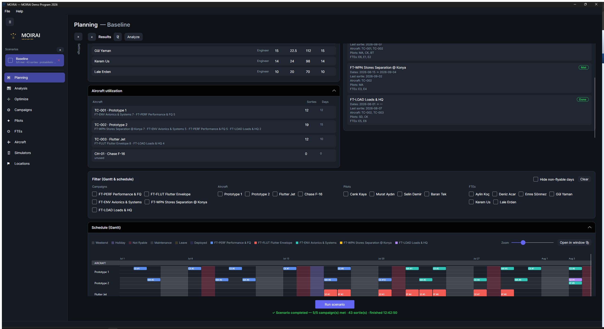
Figure 10 — The Gantt: the aircraft panel with campaign-coloured sortie boxes, the filter card and legend.
The Gantt has two stacked panels: an aircraft panel (one row per tail) and a crew panel (one row per person). Each day-row is split into the day's blocks.
- A sortie is a full-day-wide box in its block lane, coloured by campaign. A campaign that uses several blocks per sortie fills more of the row height.
- Rehearsals are dashed, pale boxes.
- Background shading marks weekends, holidays and non-flyable days. Maintenance, leave, deployment and unscheduled repairs are drawn as bands.
- Each campaign's target date is a dashed line; the master deadline is a stronger line.
- Hover a box for details (campaign, sortie number, date, block, aircraft, crew, test points). Hover an empty shaded day for why nothing can fly there.
- The date axis carries a tick per day; Mondays and month starts are labelled.
- The filter narrows the chart and schedule by campaign, aircraft, pilot or FTE.
- hide non-flyable days collapses unusable day columns for a compact view.
- Drag a maintenance / leave band to move it, or drag its edge to resize; live dates show while dragging. On the Campaigns calendar, dragging a campaign also shifts its dependent campaigns.
- Open in window ⧉ — opens the Gantt in its own resizable window that follows later runs and filters.
Below the Gantt sit the burn-down chart (next), the schedule table (every sortie, row by row) and the export buttons. Export to Excel… writes a multi-sheet workbook (summary, sorties, aircraft and crew calendars); Export PDF report writes a one-file program review.
6.2 The Test-Point Burn-Down Chart
Below the Gantt, the burn-down chart plots progress over time.
- One descending curve per campaign — the remaining CL1 Test points against the date.
- It shares the Gantt's day geometry and scrolls and zooms with it (one zoom slider, synced X axis).
- It follows the CAMPAIGN filter only. The aircraft / pilot / FTE filters do not change a campaign's progress, so they do not change its curve; the legend lists only the selected campaigns.
- Day shading, campaign deadline dashed lines and the master-deadline line match the Gantt. The date axis carries a tick per day.
- Hover any day for each campaign's remaining points.
- Open in window ⧉ — a chart-only window for a big display; it follows runs and filters live.
Earned value. Once execution tracking is active (a freeze date exists), the burn-down reads as an earned-value chart:
- Each campaign curve is solid up to the freeze ("as-of") date — the CL1 Test points actually flown — and dashed after it — the replanned remainder.
- A green "as of" line marks the freeze date.
- A summary box reports Flown (CL1 Test points / total, with %), Pace (CL1 Test points per usable day so far), the At this pace linear projected finish versus the master deadline, and the engine's Plan re-forecast finish versus the master deadline.
6.3 Separate Windows and Comparison
- Undock results — the ⧉ button on the Results header opens the whole results panel in its own window that tracks later runs and filters.
- Gantt window — Open in window ⧉ beside the Gantt; a resizable Gantt-only view with the same filters and hide non-flyable days toggle.
- Burn-down window — Open in window ⧉ beside the burn-down; a chart-only view.
- Realization Gantt — on the Analysis page, clicking a P10/P50/P90 date opens the exact Monte Carlo realization behind that outcome in its own Gantt window.
- Comparison — tick two or more scenarios in the Scenarios list and use Compare to open a side-by-side window: per-campaign end dates and met/late/incomplete verdicts, plus a "how many met" summary.
6.4 Execution Tracking
Record actuals opens a dialog listing each sortie up to a chosen as-of date. Per row you record what actually happened:
- Status — Flown, Aborted or Cancelled.
- Aircraft — the tail that actually flew (defaults to the planned tail).
- Pilots — the pilots that flew (multi-select; planned pilots pre-checked).
- FTEs — the engineers that flew (multi-select; planned engineers pre-checked).
- Actual date — the day it actually flew; edit when reality slipped from the plan.
- Actual TP — whole CL1 Test points achieved (Flown only).
Apply & replan freezes that history (flown crew hours and aircraft counters carry forward) and replans everything after the as-of date. The Gantt then shows a "replanned from" marker and flags the recorded sorties. Clicking a sortie box opens the dialog at that sortie's date.
7. The Analysis Page
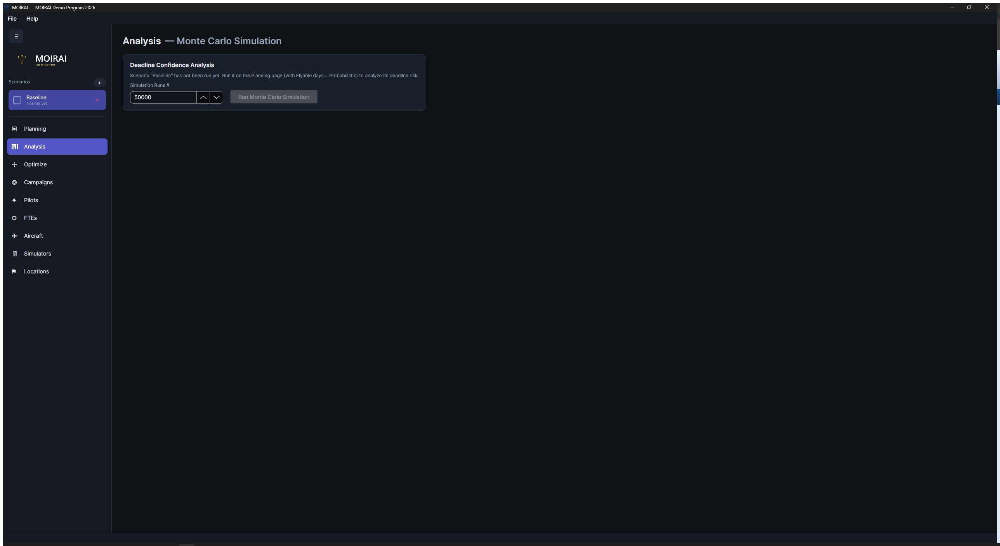
Figure 11 — The Analysis page: the deadline-confidence controls (run the scenario in Planning first).
The Analysis page turns a single schedule into a risk profile by Monte Carlo simulation. It needs the Probabilistic (seasonal monthly rates) weather model and a scenario already run in Planning.
What it is. A single, deterministic run gives one schedule and one finish date under the expected weather. Monte Carlo runs the same scheduler hundreds to thousands of times, each run drawing a different but realistic "future" for the uncertain inputs, then aggregates the many outcomes. Where one run gives a date, Monte Carlo gives a distribution — a probability of meeting each deadline and a range of possible finish dates.
What it is for. It answers questions a single run cannot: *how likely* each target is to be met, *how wide* the uncertainty is, and *which assumption* drives the risk. It turns "the plan finishes on this date" into "the plan finishes by this date with this confidence", so you can commit to a realistic date, see which campaigns are exposed, and — with the tools in 7.3–7.5 — find the cheapest way to raise confidence.
What each run varies. Every run independently re-samples only the uncertainties you have actually modelled; each one is dormant until you enter it:
- Weather — the probabilistic flyable-day model: the per-month Monthly flyable rates and the Persistence φ (weather streakiness) set under Flyable days on Planning, and a remote base's own weather on its Locations entry. Each run draws a fresh sequence of flyable / non-flyable days that keeps the long-run rate but varies the good and bad spells.
- Range / airspace availability — a remote base's booking model (Availability rate and its persistence) on Locations. Each run draws which days the range is free.
- Test efficiency (yield) — a campaign's Test Efficiency settings: the retest learning curve and the Sortie abort prob. (or the scenario-wide abort override). Each run draws which sorties abort and which test points must be re-flown, so the number of sorties actually needed varies.
- Equipment reliability — random unscheduled failures: an aircraft's Failures / 100 flight h with its repair-day range, and a simulator's Failures / 100 reh. h. Each run draws whether a tail or device breaks and for how long. (Modelled only here, never in the deterministic run.)
What stays fixed. Everything you entered as certain is identical in every run — the resources and their type ratings, the campaign scope, the calendar and holidays, planned maintenance and leave windows, prerequisites, deployments and the FTOM flight- and duty-hour limits. Monte Carlo varies only the modelled uncertainties above, so the spread you see is genuinely due to weather, yield, range and reliability — not to changing the plan.
Reproducible by design. The simulation uses a fixed random seed, so the same scenario always gives the same answer; raise Simulation Runs # for a sharper estimate rather than changing the seed (Section 9). When it compares options for you (the recommender and the optimizer), every option faces the same set of sampled futures, so the comparison is fair and low-noise.
7.1 Running the analysis
- Simulation Runs # — the number of Monte Carlo runs. More runs give a smoother, more accurate estimate but take longer. A few thousand is enough to read the headline confidence; tens of thousands sharpen the percentile dates. The default is high — see Section 9 on cost.
- Run Monte Carlo Simulation — runs the analysis. A progress dialog shows the run count and a Cancel button.
- Export analysis to Excel… / Export PDF report… — export the table and charts.
Monte Carlo needs the Probabilistic (seasonal monthly rates) weather model (set on the Planning page) and a scenario already run in Planning. With a fixed-rate weather model there is no uncertainty to sample.
7.2 The confidence table — and how to read it
What the results mean. Each row summarises the whole *distribution* of outcomes for one campaign — not a single predicted date. Read it as two questions: how OFTEN does the campaign succeed (the probability columns), and across the simulated futures, how EARLY or LATE does it finish (the percentile dates)?
One row per campaign, plus a ★ PROGRAM row for the whole scenario. The columns:
- P(meet) — probability the campaign finishes on or before its target. The cell draws a bar against a dashed 80% line: green ≥ 80%, amber 50–80%, red < 50%.
- P10 end / P50 end / P90 end — optimistic / expected / pessimistic completion dates.
- Incomplete — probability the campaign never finishes within the horizon.
- Sorties P10/50/90 — optimistic / expected / pessimistic scheduled-sortie count.
- Aborted — mean sorties that flew but made no progress.
- The ★ PROGRAM row judges the whole scenario against the master deadline: its bar is P(delivery); its dates are programme-finish percentiles.
How to read it:
- P(meet) is the share of simulated futures in which the campaign hit its target. Read the bands like a traffic light: green is on track; amber is exposed (one bad weather spell and it slips); red will miss more often than not.
- The gap between P10 end and P90 end is the campaign's UNCERTAINTY. A narrow gap means the finish is predictable; a wide gap means it swings with the weather or test yield. Plan to P50 (the expected date); commit externally nearer P90 (the pessimistic date).
- Read P(meet) and the percentiles together: if P50 end is later than the target, P(meet) is below 50% by definition (the expected finish already misses). If even P10 end is past the target, no realistic future makes it — the campaign is in serious trouble, not just at risk.
- Sorties P10/50/90 size the EFFORT, not the schedule: under test-efficiency losses each retest adds a sortie, so the pessimistic count (P90) is how many flights to budget for. Aborted is the mean wasted sorties — pure overhead to plan around.
- Incomplete above zero is a different, more serious flag: in some futures the campaign never finishes within the horizon — a structural shortfall (too little time or too few usable days), not mere lateness. Lengthen the horizon or add capacity.
- P(delivery) on the ★ PROGRAM row is the headline for management — the probability the whole programme is delivered on time. It is not the average of the campaign probabilities: the programme is delivered only when EVERY campaign meets the master deadline, so it is usually lower than the best campaigns and tracks the weakest.
- Click any P10/P50/P90 date to open the exact simulated schedule behind it in a Gantt window — useful to see WHY a pessimistic run ran long.
7.3 Risk decomposition — what it is and what it tells you
What it is. Decompose risks is a controlled experiment. It re-runs the full Monte Carlo several times, each time with only ONE uncertainty source live — weather only, test-efficiency only, range only — and once more with everything combined. The inactive sources are frozen at their expected (nominal) values, so each row shows the risk that ONE source contributes on its own.
What it is for. When P(delivery) is low, the obvious question is *why*. The fix for a weather problem (deploy, reschedule, accept the risk) is completely different from the fix for a yield problem (procedures, instrumentation) or a range problem (book more airspace). Decomposition identifies the culprit so you do not spend effort or money on the wrong remedy.
The columns:
- Source — the single uncertainty source active in that row (or All for the combined run).
- P(program) — probability the whole programme delivers on time with only that source active.
- Finish P10 / Finish P50 / Finish P90 — optimistic / expected / pessimistic programme-finish dates for that source.
- Range (P10→P90) — the spread, in days, between the optimistic and pessimistic finish: how much schedule uncertainty that source alone creates.
- Sorties P50 / P90 — expected and pessimistic total sortie counts under that source.
What the results mean.
- The row with the LOWEST P(program) is the dominant driver — the single source that most threatens the deadline.
- The widest Range (P10→P90) is the source that injects the most *schedule uncertainty* (the biggest swing between best and worst case), even when its P(program) is not the lowest.
- The combined (All) row is the realistic figure — every source acting together. Comparing each single-source row against it shows how much of the total risk that one source explains.
- A source whose row is near-perfect (high P(program), a Range of a day or two) is effectively a non-issue: you can stop worrying about it and focus on the dominant one.
How to act — match the remedy to the dominant driver:
- Weather dominant — more jets or crew will not help (the limit is flyable days). Consider deploying to a better-weather base, shifting the campaign into a better season, or relaxing the deadline.
- Test-efficiency dominant — the losses are retests and aborts. Invest in procedures, instrumentation and crew training; use the recommender's Improve retest rate / Reduce aborts levers.
- Range dominant — secure more (or earlier) range / airspace bookings; the constraint is access, not aircraft.
- Failures dominant (when reliability is modelled) — invest in spares, reliability and maintenance turnaround.
7.4 Sensitivity analysis — what it is and what it tells you
What it is. A one-factor-at-a-time experiment on the MODEL PARAMETERS — the numbers you estimated rather than measured. Each parameter (weather persistence φ, flyable rate, and, when test efficiency is on, the abort and retest probabilities) is swung to a plausible LOW and a HIGH value while the others are held at baseline, and the full Monte Carlo is re-run at the same seeds. The output is how far P(program) moves for each parameter.
What it is for. Risk decomposition (7.3) tells you which uncertainty *source* dominates; sensitivity tells you which *input number* your answer is most fragile to. A forecast that swings wildly when you nudge one guessed parameter is only as trustworthy as that guess — sensitivity flags which number to pin down with real data, or be conservative about, before you rely on the result.
The controls:
- Runs (N) — Monte Carlo runs per sensitivity evaluation (each parameter's low and high setting is a full analysis).
- Run sensitivity — performs the sweep and draws the tornado plus the φ table.
- Tornado — P(program) swing per parameter — one bar per parameter.
- Weather persistence (φ) sweep — P(program) and median Finish P50 at φ = 0.2 / 0.5 / 0.8 / 0.95.
What the results mean.
- Tornado chart — one horizontal bar per parameter, sorted longest-first. The bar length is the P(program) swing between the parameter's low and high settings; the LONGEST bar is the assumption your result leans on most. The colour shows the direction (whether the high setting makes delivery more or less likely). A short bar means the result is robust to that guess.
- φ (persistence) sweep — P(program) and the median finish at four streakiness levels, at the SAME average flyable rate. It isolates the effect of weather coming in long good/bad spells rather than evenly.
Counter-intuitive but correct: streakier weather (higher φ) HELPS a programme already likely to MISS — it needs an above-average lucky run, and longer spells make a lucky streak more likely — and HURTS a comfortable programme, which one long bad spell can derail. So P(program) rising with φ for an underwater plan is a real effect, not a bug.
How to act. Take the top one or two tornado bars and replace those guessed numbers with measured values (historical weather rates; recorded retest / abort rates from earlier campaigns). Re-run: if the headline holds across the plausible range, the plan is robust; if it flips, the decision hinges on that number — gather data before committing.
7.5 Resource recommendation — closing the gap
A guided search for the FEWEST changes that raise every campaign to your target confidence. Use it like this:
- Tick only the levers you are willing to use (you might allow reassigning crew but not adding aircraft).
- Set Target confidence (%) (90% is a common bar) and Max steps (how many changes at most).
- Press Recommend fixes. The result is an ordered list, each step showing the before → after confidence.
- Apply the cheapest set of changes that reaches the target.
The levers:
- Add pilot / Add FTE / Add aircraft — add a new resource.
- Reassign existing crew — attach an existing crew member to a failing campaign.
- Loosen daily limits — raise the per-person daily caps.
- Raise test points / sortie — fewer required sorties.
- Improve retest rate / Reduce aborts — improve test efficiency.
- Target confidence (%) — the confidence every campaign must reach.
- Max steps — maximum number of changes the search may make.
- Search runs (N) — runs used to score each candidate.
- Recommend fixes — runs the search and lists an ordered set of changes.
The recommender is honest: it will NOT propose hardware for a campaign whose binding constraint is weather or a prerequisite (more jets cannot create flyable days). If it reports the target is unreachable with your chosen levers, the constraint is structural — change the schedule, the scope or the deadline.
8. The Optimize Page
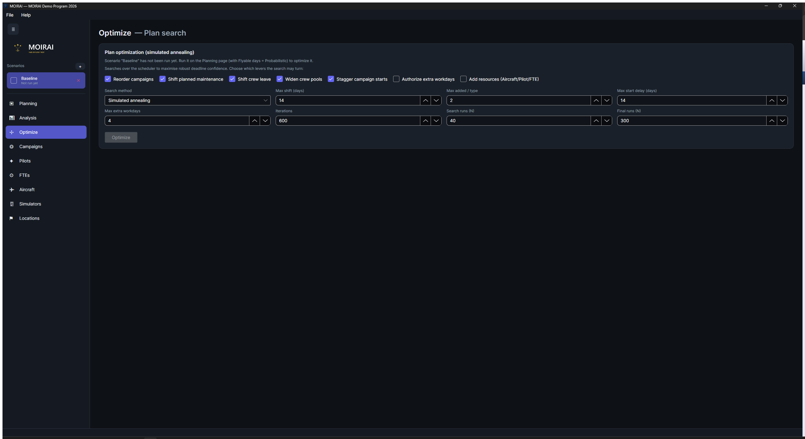
Figure 12 — The Optimize page: the lever check-boxes, search budget and result list.
Where the recommendation card (Section 7.5) finds the cheapest fix for failing campaigns, the Optimize page searches a LARGER space — campaign order, the placement of maintenance and leave windows, staggered starts, extra workdays and (optionally) new resources — for the best overall plan. It treats the scheduler as a fast scoring function and explores thousands of candidate plans, keeping the one with the highest robust Monte Carlo confidence.
8.1 What it optimises
Every candidate plan is scored by re-running the Monte Carlo and summing the campaigns' deadline confidence (Σ P(meet)); when a master deadline is set, the programme delivery probability P(delivery) joins the objective. Three properties matter:
- Robust, not lucky. Candidates are scored on the spread of weather futures (Monte Carlo), not a single run, so the winner is the plan that holds up across conditions — not one that happens to suit one forecast.
- Fair comparison. Every candidate faces the SAME set of sampled futures (common random numbers), so two plans are judged against identical weather. This removes the noise that would otherwise swamp small differences.
- Honest. The search keeps the baseline plan unless a candidate genuinely beats it at the accurate (high-N) score, and it is reproducible (fixed seed) — the same scenario always yields the same recommendation.
8.2 How to use the Optimize page
- Tick the levers the search may turn (start with Reorder campaigns; add the maintenance / leave shifts if those windows are movable; enable the resource levers only if adding new resources is genuinely on the table).
- Set the search budget (Section 8.4). Start small to gauge the run time, then increase for the final search.
- Press Optimize. A progress dialog shows the search phase and can be cancelled at any point.
- Review the Result: the headline numbers, the proposed changes and (if a resource lever ran) the cost–confidence frontier.
- Tick the changes you want and press Create scenario from selected to spin them off into a new child scenario (Section 8.6); the current scenario is never modified.
8.3 The levers — what each one does
Each lever is a kind of change the search is allowed to make. All are off-limits unless ticked, so you stay in control of what the optimiser may touch.
- Reorder campaigns — changes which campaign gets first claim on scarce aircraft and crew (the priority order). Costs nothing and is often the biggest free win; safe to leave on.
- Shift planned maintenance — moves aircraft maintenance windows earlier or later (within Max shift), to free a tail when a campaign needs it. Only planned (fixed-date) windows move.
- Shift crew leave — moves personnel leave windows (within Max shift) to relieve a crew clash.
- Widen crew pools — adds an ALREADY-PRESENT pilot or engineer to a campaign's assigned pool (no new resources added) so the campaign has more eligible crew to draw on.
- Stagger campaign starts — delays a campaign's opening (within Max start delay, never before its readiness date), so a lower-priority campaign stops competing with a critical one.
- Authorize extra workdays — releases specific weekend / holiday dates for work (within Max extra workdays). This is overtime, so it is off by default.
- Add pilots / Add FTEs / Add aircraft — joint optimisation: the search may add NEW resources, each up to its own cap. Every addition is charged a confidence cost, so an addition is proposed only when its gain clearly exceeds the cost. These three are independent — enable only the ones you would actually fund.
8.4 Search method and budget
- Search method — Simulated annealing refines one plan with random moves and a cooling acceptance rule (the fast default); Genetic algorithm evolves a population with crossover and mutation (a wider search, more evaluations).
- Max shift (days) — how far a maintenance or leave window may move from its original dates.
- Max start delay (days) — how many days a campaign's opening may be delayed.
- Max extra workdays — how many weekend / holiday dates may be authorised.
- Max added pilots / Max added FTEs / Max added aircraft — the per-type caps on new resources the search may add.
- Iterations — how many candidate plans the search evaluates. More iterations search wider and take proportionally longer.
- Search runs (N) — Monte Carlo runs scoring each candidate DURING the search. Keep this low for speed; the fair comparison (common random numbers) keeps it meaningful even at a small N.
- Final runs (N) — Monte Carlo runs used to score the baseline and the winner accurately. The winner is kept only if it still beats the baseline at this higher N.
- Optimize — starts the search.
Cost guide: the search does roughly Iterations × Search runs scheduler evaluations, then a final pass at Final runs. Keep Search runs low (tens) while searching and raise Final runs (hundreds+) only to score the winner — see Section 9.
8.5 Reading the result
After the search, the Result card shows three things:
- Headline — whether the search improved on the baseline, with the before → after numbers: Σ P(meet) and (with a master deadline) P(delivery), the number of proposed changes and the run count. "No improvement found" means the current plan is already best for the chosen levers.
- Proposed changes — a check-list, one row per change, each tagged by kind (Ordering, Maintenance, Leave, Start date, Crew, Workday, Resource) and described in plain terms (e.g. "FT-FLUT maintenance moved 6 days earlier", "Add +1 aircraft"). Every row is independently tickable.
- Cost–confidence frontier (shown only when a resource lever ran) — a small table of the best plan at each number of added resources: Additions, What (e.g. "+1 aircraft, +1 FTE"), Σ P(meet) and P(delivery). It shows exactly what each extra jet or crew member adds, so you can stop where the confidence gain no longer justifies the cost.
8.6 Applying results — child scenarios, re-plan and comparison
The optimiser never edits your scenario. Instead you choose which proposed changes to keep and spin them off into a new scenario, which stays linked to the one it came from:
- Select changes individually. Tick any subset of the proposed changes — all of them, or just the ones you accept (e.g. take the reorder and the maintenance shift, but not the added aircraft).
- Create the child. Create scenario from selected makes a NEW scenario that is a deep copy of the current (source) scenario with ONLY the ticked changes applied, its results cleared. The source scenario is left exactly as it was, so you never lose your baseline.
- It is linked to its parent. The new scenario is recorded as a CHILD of the source — it appears in the sidebar Scenarios list as a variant of its parent, and the results panel groups it under the parent (the Scenario family — original vs optimized variants view). You can spin off several children from different change subsets.
- Re-plan the child. Select the child in the sidebar and press Run scenario on the Planning page to build its schedule; its row in the family view then fills in. Run Monte Carlo on it (Analysis) to get its confidence.
- Compare with the parent. Tick the parent and the child (and any other run variants) in the Scenarios list and press Compare to open a side-by-side window: per-campaign end dates with Met / Late / Incomplete verdicts and a "how many met" summary — so you can confirm the optimiser's plan really is better before adopting it.
Optimize vs the recommender. The recommender (Section 7.5) is quick and answers "what is the cheapest change to hit my target?". The optimizer searches a bigger space and takes longer, but can squeeze a better plan out of the EXISTING resources and weigh adding resources against a cost. Use the recommender first; reach for the optimizer to fine-tune. Both are reproducible (fixed seed) and honest — the optimizer keeps the baseline plan if no candidate is genuinely better at the accurate score.
9. Performance, CPU and Reproducibility
Monte Carlo analysis and the optimizer are computationally heavy: each runs the full scheduler hundreds to many thousands of times. Knowing what to expect avoids surprises.
9.1 What to expect
- The analysis and the optimizer use ALL of your CPU cores. The processor at or near 100% during a run is normal and expected — the work is shared across cores to finish faster.
- A run takes from a few seconds to several minutes, depending on the number of runs, the horizon length and the number of campaigns. A progress dialog shows progress and a Cancel button throughout.
- The interface stays responsive (the work runs on background threads), but the machine is busy — other heavy applications will compete for the cores.
- On a laptop, a long analysis drains the battery and warms the machine; run large analyses on mains power.
9.2 Choosing the number of runs
- More runs give a smoother, more accurate estimate but take proportionally longer. The noise falls only with the square root of the runs, so doubling the runs sharpens the result only modestly.
- For a quick read of the headline confidence, a few thousand runs is plenty. Raise the count for stable percentile DATES (P10/P50/P90) or before a final report.
- The optimizer multiplies the cost — roughly Iterations × Search runs. Keep Search runs (N) low while searching; use a higher Final runs (N) only to score the winner.
9.3 Reproducibility
- Monte Carlo and the optimizer use a FIXED random seed, so the same scenario gives the same result every time. To get a more accurate answer, increase the number of runs — do NOT change the seed.
- When comparing candidates (in the recommender and optimizer), the same simulated futures are reused for every option, so two choices are judged fairly against identical weather — a low-noise comparison.
10. How the Engine Works
All thresholds and rates are scenario data, never fixed in code.
10.1 The scheduler
A deterministic, greedy, day-by-day forward pass with no backtracking. For each usable day (a working day that is also flyable):
- Collect the open campaigns (started, prerequisites complete, sorties still needed) and order them by target date.
- Make repeated passes until a pass places nothing.
- For each campaign: find a compatible aircraft with a free block whose rated crew are available; pick the least-loaded eligible crew by recent duty; tentatively commit the sortie; search the preceding working days for a rehearsal slot. If none exists, roll back.
- An open campaign that places nothing that day has the day attributed to its dominant blocking reason.
10.2 Feasibility, rehearsals and deployments
- The aircraft is occupied for the whole sortie block span (flight + turnaround); the crew occupies only the flight block.
- Crew feasibility enforces the FTOM flight/duty windows (daily, 7, 14, 28-day, calendar year), minimum rest, the consecutive-flying-day limit and the optional flight-duty cap.
- A rehearsal is flown by the same crew within the maximum gap of working days before the sortie, on an available simulator. A remote base without a simulator forces rehearsals to complete at the main base before departure.
- A deployment is one window per remote base, from all campaigns assigned to it; the committed aircraft and crew are away from the main base for the whole window.
10.3 Maintenance, type ratings and multi-crew
- Periodic maintenance is triggered by accumulated flight hours and opens the downtime the next day.
- Unscheduled maintenance is sampled only during Monte Carlo.
- A sortie carries at least the greater of the campaign's test-crew need and the aircraft's flight-deck minimum.
- Crew must be type-rated on the chosen aircraft; an aircraft with no rated crew is removed from the campaign's candidates.
10.4 Monte Carlo and optimisation
- Weather is a two-state Markov chain. Persistence lengthens good and bad spells without changing the long-run flyable rate.
- Higher persistence raises the variance of flyable days: a comfortable programme is hurt, a marginal one helped.
- All runs use common random numbers, so candidate comparisons are fair.
- The optimiser maximises the same confidence score, with a disruption penalty that keeps the plan close to the baseline.
10.5 Bottleneck diagnosis
When an open campaign cannot fly on a usable day, the engine records the dominant reason: prerequisite, non-usable day, range unavailability, no aircraft, no pilot, no engineer, no rehearsal slot, or data-review pacing. These drive the "why it slipped" explanation and stop the recommender proposing hardware for a weather- or prerequisite-bound campaign.
11. A Worked Example
This sequence mirrors the "MOIRAI Demo Program 2026" session. Use the same order for your own programme.
- Open the session. File › Open Session… for the demo, or New Session to start empty. The Baseline scenario appears in Scenarios.
- Enter resources. On Aircraft, add each aircraft (tail number, Pilots to fly the type, maintenance, reliability). On Pilots and FTEs, add people and set Type ratings and Leave windows. Define any Simulators and Locations.
- Enter campaigns. On Campaigns, define each test: test points, sortie hours, blocks, compatible aircraft, assigned crew, prerequisites, and (if relevant) Test Efficiency and per-sortie crew.
- Configure the run. On Planning, set the Planning horizon and (if used) the Master deadline; choose the Working calendar and Flyable days model (probabilistic for Monte Carlo); review the operational limits. Clear any Pre-run checks errors.
- Run. Press Run scenario. Read the verdict, the workload, the campaign outcomes and the Gantt; inspect why it slipped for any late campaign.
- Analyse. On Analysis, press Run Monte Carlo Simulation. Use Decompose risks and Run sensitivity for the dominant driver, and Recommend fixes for the cheapest path to the target. Click a P50 date for that realization's Gantt.
- Improve and compare. On Optimize, enable levers, run the search and apply the winner as a new scenario; or copy the scenario, change one input, and compare side by side.
- Execute. As the programme runs, use Record actuals to log what flew and replan. Export with Export to Excel… or Export PDF report.
12. Tips and FAQ
- Monte Carlo confidence is 0%. The programme is usually structurally late. Compare the master deadline against the simulated P50 finish, not the deterministic finish. If the bottleneck is a resource, use Recommend fixes, not sensitivity.
- A campaign never flies. Read Pre-run checks and why it slipped. Usual causes: no compatible or rated aircraft, insufficient crew, an incomplete prerequisite, or a weather- / range-bound window.
- Reproducibility. Monte Carlo and the optimiser use a fixed seed. Increase the number of runs for accuracy; do not change the seed.
- Results are saved with the session. Each scenario stores its run snapshot and results, so they survive reopening.
- "+1 aircraft" questions. Copy the active scenario with +, add the resource in the copy, run it, and compare the two side by side.
This manual uses the sample demo session; your programme will have different resources, campaigns and numbers. Every limit and model is scenario data — set them to your organisation's FTOM values.